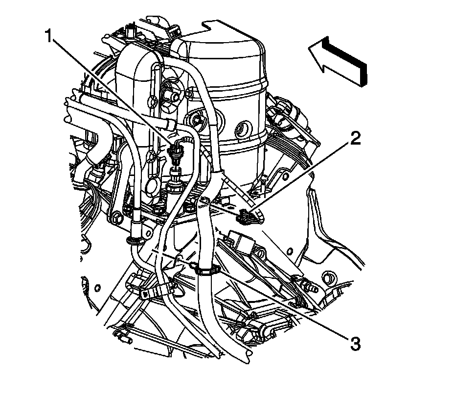
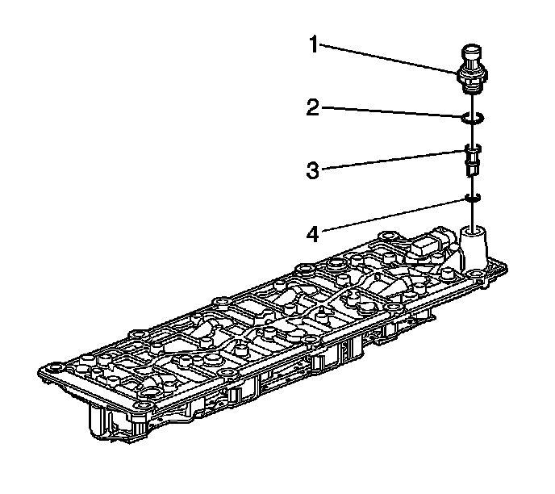

Valve Lifter Oil Filter Replacement
Valve Lifter Oil Filter Replacement
Removal Procedure

1. Remove the intake manifold.
2. Disconnect the engine harness electrical connector (1) from the oil pressure sensor.

3. Remove the oil pressure sensor (1) and washer (2).
4. Remove and discard the valve lifter oil filter (3).
5. Remove and discard the valve lifter oil filter O-ring seal (4).
Installation Procedure
1. Install a NEW valve lifter oil filter O-ring seal (4) into the valve lifter oil manifold.
2. Install the NEW valve lifter oil filter (3).
3. Apply sealant GM P/N 12346004 (Canadian P/N 10953480) or equivalent to the threads of the oil pressure sensor.
Notice: Refer to Fastener Notice.
4. Install the oil pressure sensor washer (2) and sensor (1).
Tighten the sensor to 35 N.m (26 lb ft).
5. Connect the engine harness electrical connector (1) to the oil pressure sensor.
6. Install the intake manifold.